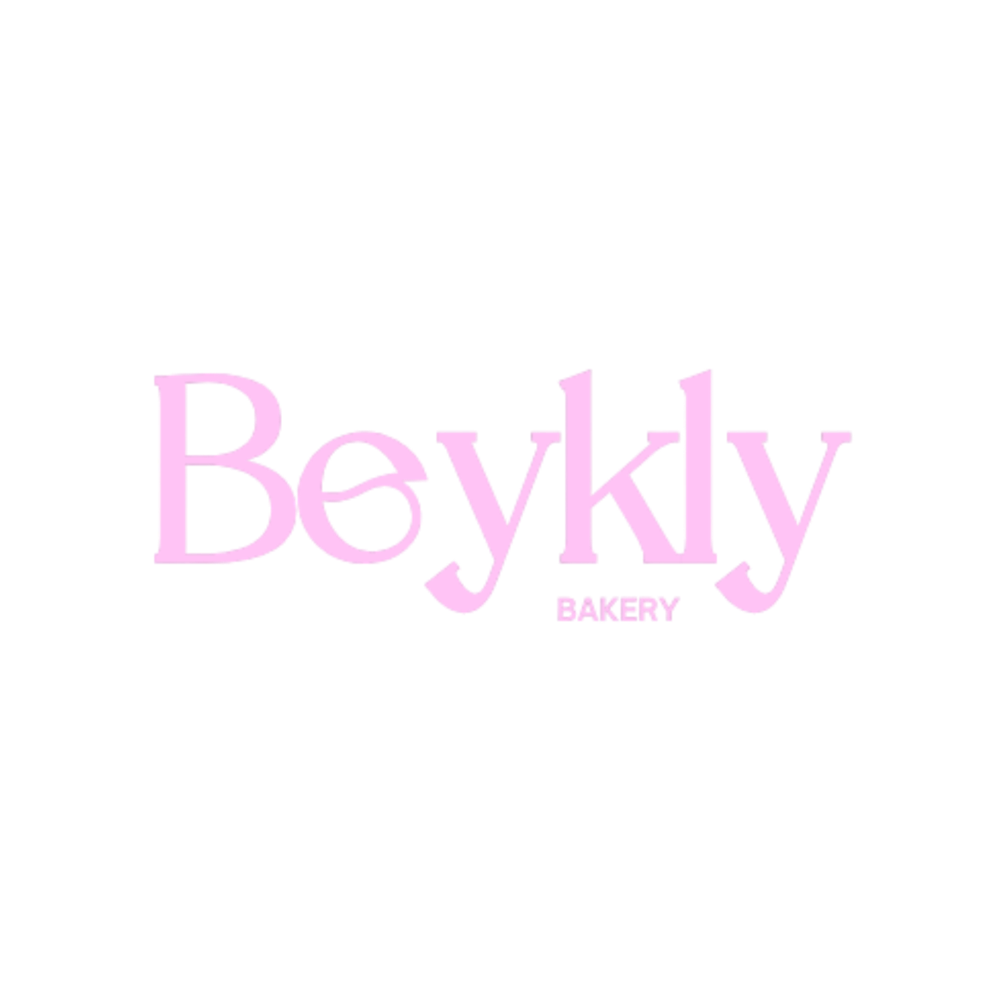

Inicio
Beneficios
Contacto
Lo rico también puede ser sano
Postres saludables, sin culpa y con ingredientes reales
Explorar
Opciones veganas
Opciones keto
Sin azúcar añadida
Bajas en calorías
Sin gluten
Diferentes tamaños
Tablas nutricionales claras
Ingredientes naturales
Conecta con nosotros